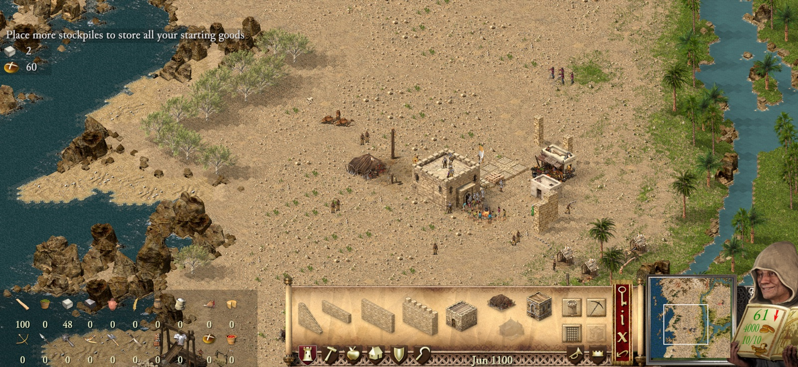
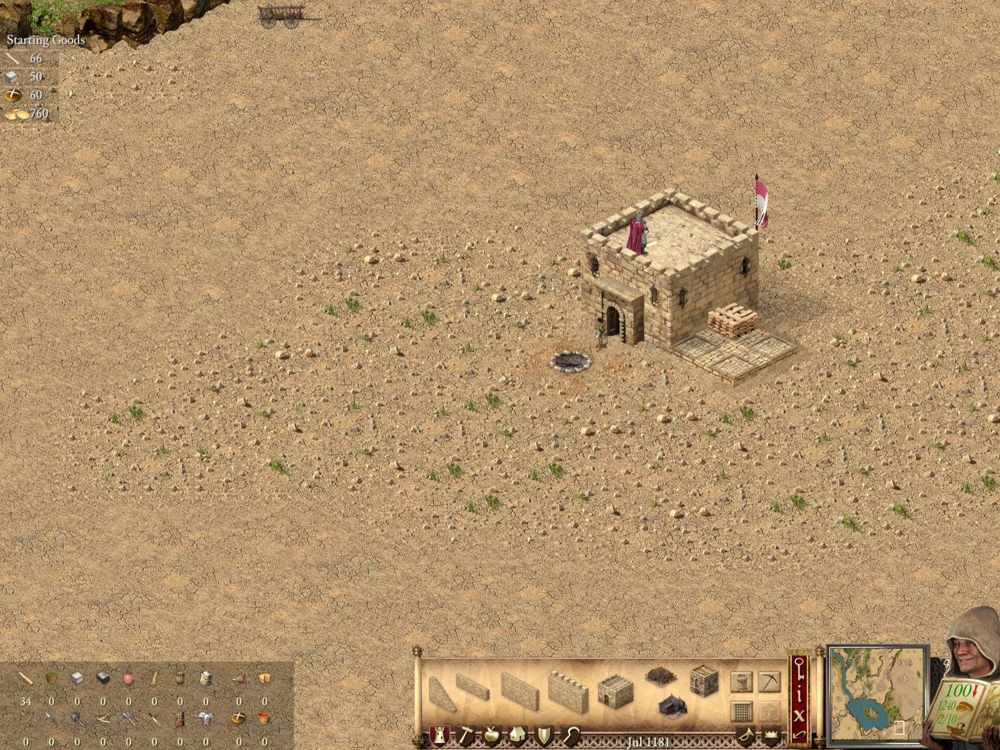

A castle in your pocket
Full screen in landscape, the in-game bar sized for a phone, and touch controls made for building and fighting with your fingers. It's the same engine as the Mac app: the simulation runs on the device itself, nothing is streamed.


How it works
Like the Mac app, nothing of the game is in our download. The iPhone Builder makes the app for your device on your own Mac, from your own copy of the game.
Get the Builder
Download it, drag it into Applications, and open it the first time with right-click › Open (it isn't notarized yet).
Your game files
The same setup as the Mac app: a copy already on the Mac is used directly, or it downloads the game from Steam with your account. If you already use the Mac app, this step is done.
Choose your devices
New Devices or All Devices (below). The Builder packs the app, about 4.4 GB, in a few minutes. Show in Finder takes you to it.
Sideload it
Install the .ipa on your iPhone or iPad with Sideloadly or AltStore, signed with your Apple ID (next section).
New Devices
iPhone 15 Pro and newer, iPads with an M chip
The game's art exactly as it is. These chips read its texture format directly. The quicker build.
Makes Strong Hold.ipa.
All Devices
Any iPhone or iPad with iOS 16 or newer
Older chips can't read the game's texture format, so the Builder converts the art to one every Apple chip reads (ASTC). About two minutes more the first time, kept for later builds. You'd have to look very closely to see a difference.
Makes Strong Hold (all devices).ipa.
Not sure? Choose All Devices: it runs on new devices too. The .ipa lands in ~/Library/Application Support/Strong Hold/. It contains your game files, so keep it to yourself: share the Builder, not the app it makes.
Install it on your device
Apps from outside the App Store have to be signed for your device. A sideloading tool does that with your Apple ID: a free one works.
With Sideloadly (recommended)
- Install Sideloadly on your Mac and connect your iPhone or iPad with a cable. Unlock it and tap Trust if it asks.
- Drag
Strong Hold.ipa(or the all-devices one) into Sideloadly, enter your Apple ID and click Start. The app is large: copying takes a few minutes. Keep the device unlocked. - On the device: Settings › Privacy & Security › Developer Mode › on (iOS 16 and newer ask for this once). The device restarts; confirm with Turn On.
- Settings › General › VPN & Device Management › your Apple ID › Trust.
- Open Strong Hold from the home screen. Turn the device sideways.
With AltStore
- Install AltServer from altstore.io on your Mac and use it to put AltStore on your device.
- Copy the
.ipato the device (AirDrop, or the Files app), open AltStore › My Apps › + and pick it. - Developer Mode and Trust as above.
With a free Apple ID, Apple lets a sideloaded app run for 7 days. Then open Sideloadly or AltStore and refresh it: your saves and settings stay. A paid developer account makes it a year. A new version of Strong Hold: download the new Builder, build again and install over the old app; your saves stay.
Controls
No waiting and no hold-to-confirm: every gesture acts the moment you lift your finger. Your finger never covers what you're placing.
| Gesture | What it does |
|---|---|
| Map and selection | |
| Tap | Click: select a building or soldier, press a button. With troops selected, tap the ground to move them or an enemy to attack. Soldiers are easy to hit: the tap counts if it lands within a fingertip of one. |
| Swipe with one finger | Move the map. It glides on a little when you let go; touch it to stop. |
| Tap, then press again and drag | Selection box: a quick tap, then put your finger down again right away and drag over your troops. Lifting selects them. |
| Building | |
| Press with a building | The building appears under your finger. Drag to move it where you want it; it's placed where you lift your finger. |
| Walls, stairs, moat, pitch | Two touches. The first touch aims the start: move your finger, lift, and a ring marks where the wall begins. The second touch draws the wall from the ring to your finger; lift to build it. |
| A button on the bar | Always a click, also with a wall started: the ring stays where it was. |
| Two and three fingers | |
| Two fingers | Move the map, pinch to zoom, twist to turn the map (like Q and E). |
| Quick two-finger tap | Right click: put the tool down, deselect, drop a started wall. |
| Three-finger tap | Pause menu (Escape): save, load, options, quit. |
Performance
The engine is native code on the device, and the game's art goes to the graphics chip compressed, as on the Mac. Measured in skirmishes on our test devices:
Measured on 16 November 2026 with the first iOS builds. Your numbers depend on the device, the map and the size of the battle.
Good to know
- The app on your device doesn't update itself: build it again with the newest Builder when a new version is out.
- The credits list and the picture behind the Crusader Trail screen are missing on iOS for now.
- LAN games ask for local network access the first time. Multiplayer between a Mac and an iPhone hasn't been tested yet.
- A trackpad, mouse or keyboard on an iPad hasn't been tested yet: the game is made for touch.
- Older devices with little memory (2 to 3 GB) may close the game in big battles.
What it does
- The Builder does what the Mac app's setup does (Steam download through Valve's DepotDownloader, or your copy on the Mac) and writes the
.ipainto~/Library/Application Support/Strong Hold/. It never uploads it anywhere. - The app on your device keeps its saves and settings in its own storage. It goes online only for LAN games on your network and to list the custom lords and maps in Extras (from GitHub).
- Source code: Strong-Hold-source (
viewer/src/ipa.rs,viewer/bundle_ios.sh, the touch controls inviewer/src/gestures.rs).